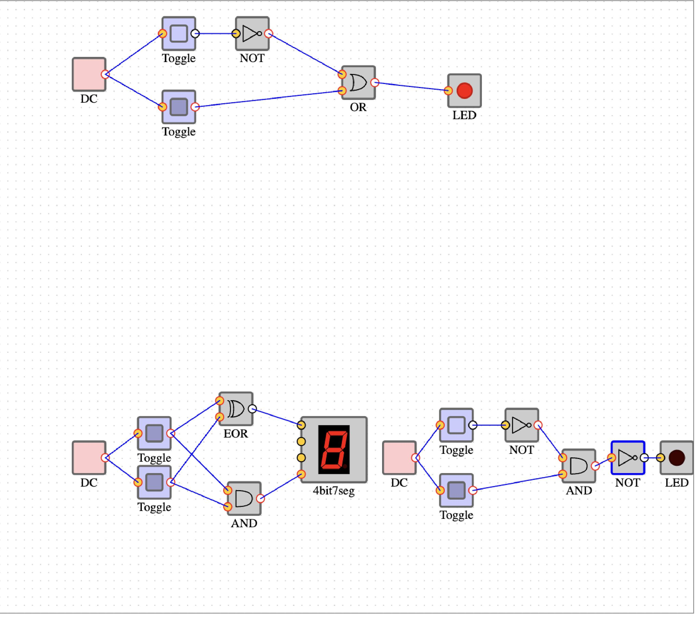

To help me gain experience with the BBLearn course management system
To prepare me for creating a website on the Drexel Tux server
To familiarize myself with the environment and tools that I will need to create, edit, upload, and download files between the server and my client environment
To gain some HTML authoring experience
To see how many minor changes Charlie can make without anyone knowing because no one is checking well enough
Grade: 95.00/100
Lab 2
(Right Click and Open In New Tab To View Image Enlarged)

Purpose:
The purpose of this lab is to solidify your understanding of the basics of Boolean logic and how that is used to implement computers.